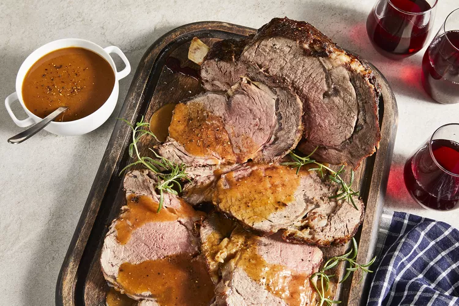
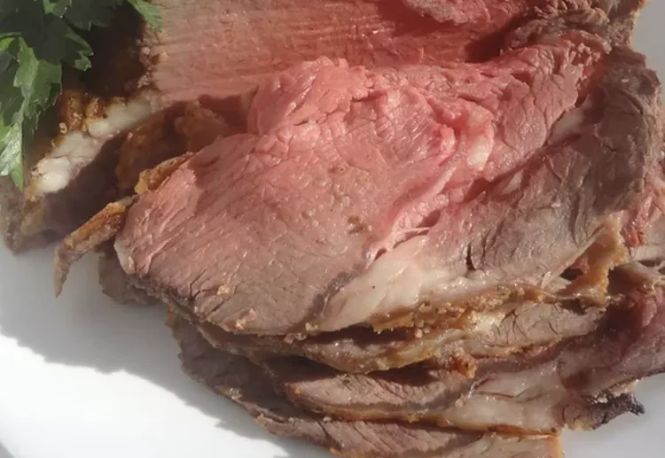

Foolproof Rib Roast
Follow this rib roast recipe for a tender, succulent, standing rib roast that will be the centerpiece of your holiday table! The key to juicy,
perfectly cooked beef is to let your bone-in roast get to room temperature before cooking. This recipe is for well-done beef so cook yours for
less time if you like your beef medium or medium-rare. Rib roast can be expensive, so this is a total splurge or special-occasion dish.

What Is a Standing Rib Roast?
A standing rib roast, also known as a prime rib roast, is a cut of beef from the primal rib. It's called a standing rib roast because it's usually
cooked "standing" on the bones (so that the meat doesn't touch the pan).
Prime rib is generally considered a superior cut of beef: It's tender, juicy, and wonderfully flavorful.
Ingredients
- 1 (5 pound) beef standing rib roast, at room-temperature (let sit out for 1 hour before starting recipe)
- 2 teaspoons salt
- 1 teaspoon ground black pepper
- 1 teaspoon garlic powder

Directions
- Preheat the oven to 375 degrees F (190 degrees C). Place a rack in a roasting pan.
- Combine salt, pepper, and garlic powder in a small cup.
- Place room-temperature roast on the rack in the roasting pan with the fatty side up and the rib side on the bottom.
Rub the seasoning onto the roast.
- Roast for 1 hour in the preheated oven. Turn the oven off and leave the roast inside for 3 hours, without opening the door.
- Turn the oven back on to 375 degrees F (190 degrees C) and reheat the roast for 30 to 40 minutes. The internal temperature should
be at least 145 degrees F (62 degrees C).
- Remove from the oven and let rest for 10 minutes before carving.